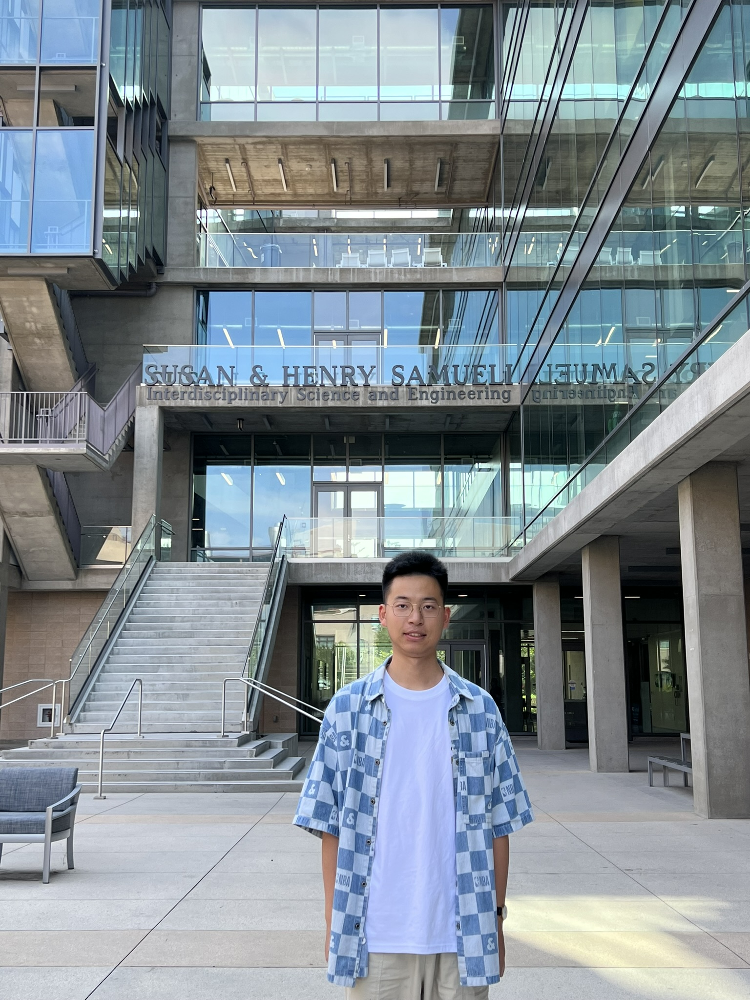

Software Engineer | LLM Agents & AI/ML

I hold an M.S. in Electrical Engineering and Computer Science from the University of California, Irvine, and a B.Eng. in Communication Engineering from Nanjing University of Posts and Telecommunications. My experience spans LLM agent development, full-stack business systems, and deep learning for medical imaging.
At HMLS Auto Service LLC, I developed an agent-based online order management and quotation diagnosis system using Python/FastAPI, React/Next.js, PostgreSQL, and Docker. I integrated LangChain/LangGraph, OpenAI API, RAG, and REST APIs to automate customer request parsing, repair item identification, quotation generation, and order status tracking.
Aug 2023 – Jul 2025
M.S. in Electrical Engineering and Computer Science
Sep 2019 – Jul 2023
Bachelor of Engineering in Communication Engineering
Mar 2026 – Aug 2026
HMLS Auto Service LLC | California, USA
Oct 2024 – Jul 2025
UCI Radiological Imaging Laboratory | Advisor: Prof. Sabee Molloi
Jan 2025 – Mar 2025
Department of Electrical Engineering, UCI | Supervisor: Prof. Wei-Fang Chen
Sep 2023 – Dec 2023
Personal Project | Advisor: Prof. Terence D Sanger
Sep 2023 – Dec 2023
Project Leader | Advisor: Prof. Pramod Khargonekar
Jan 2022 – Apr 2022
Online Course Project Leader | Advisor: Prof. Danijela Cabric
Aug 2021 – Oct 2022
Advisors: Prof. Xie Guozhi, Prof. Cheng Yong, Prof. Wang Zimin, etc.